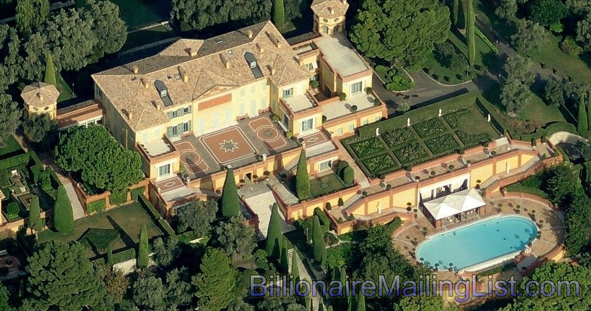

Villa Leopalda, France
History
- Villa La Leopolda in its current incarnation was designed and built from 1929 to 1931 by the
American architect, Ogden Codman, Jr., on an estate once owned by King Leopold II of
Belgium. Leopold had made the previous estate a present for his mistress Blanche Zélia
Joséphine Delacroix, also known as Caroline Lacroix, and it derives its name from him. After Leopold's death, Blanche Delacroix
was evicted, and his nephew, King Albert I, became its owner. During World War I, it was used as a military hospital.
- In 1919, Thérèse Vitali, Comtesse de Beauchamp, acquired the property and commissioned modifications. Ogden Codman, Jr. purchased the dozen existing structures that made up the property (which included two peasant cottages) and began his architectural magnum opus in 1929. It was completed by 1931. However financial difficulties (and his lavish expenditures) precluded his being able to live in it, so he rented it out to various wealthy tenants. One famous English couple tried to lease it but insisted on making changes that were contrary to Codman's aesthetic objectives and strict list of protective clauses. Negotiations in a Paris Hotel room broke down over the many restrictions Codman imposed, and Ogden's response was: "I regret that the House of Codman is unable to do business with the House of Windsor." Codman's extensive designs and construction gave the estate, once a series of unrelated buildings, its current appearance. His neo-Palladian vision, coupled with his in-depth knowledge of historical precedent, resulted in the construction of a spectacular villa with extensive gardens and landscaping. Floor plans, letters, records, and stereo glass-plate views of the newly completed property still exist in the collections of the Society for the Preservation of New England Antiquities (a.k.a. Historic New England)[3] At Codman's death in 1951, the estate was sold to Izaak Walton Killam whose wife, Canadian philanthropist Dorothy J. Killam, inherited the place after his death. In the later 1950s she sold it to Fiat president Gianni Agnelli (1921–2003) and Marella Agnelli.